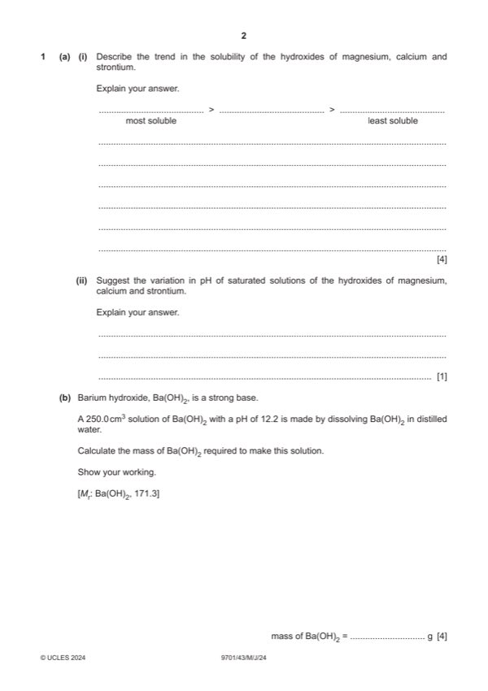

Question 1

Original paper page 2
Part 1(a)(i) — solution
- [M1] strontium > calcium > magnesium 4
- [M2] Hlatt and Hhyd both become less exothermic / less negative
- [M3] Hlatt changes more
- [M4] Hsol becomes more exothermic / more negative
Mark points
- [M1] strontium > calcium > magnesium 4
- [M2] Hlatt and Hhyd both become less exothermic / less negative
- [M3] Hlatt changes more
- [M4] Hsol becomes more exothermic / more negative
Part 1(a)(ii) — solution
pH increases as the concentration of [OH–] ions increases 1
Mark points
- Include the ideas shown in the solution above.
Part 1(b) — solution
- [M1] [H+] = 10–12.2 OR 6.31 10–13 4
- [M2] [OH–] = 0.0158 mol dm–3 ecf
- [M3] [Ba(OH)2] = 0.01585 ÷ 2 = 7.92 ecf
- [M4] mol of Ba(OH)2 = 0.00792 ÷ 4 = 1.98 10–3
Mark points
- [M1] [H+] = 10–12.2 OR 6.31 10–13 4
- [M2] [OH–] = 0.0158 mol dm–3 ecf
- [M3] [Ba(OH)2] = 0.01585 ÷ 2 = 7.92 ecf
- [M4] mol of Ba(OH)2 = 0.00792 ÷ 4 = 1.98 10–3
Part 1(c)(i) — solution
- Ksp = [Fe2+][OH–]2 1
Mark points
- Ksp = [Fe2+][OH–]2 1
Part 1(c)(ii) — solution
- [M1] Ksp = 4 (5.85 10–6)3 = 8.01 10–16 2
- [M2] mol3 dm–9
Mark points
- [M1] Ksp = 4 (5.85 10–6)3 = 8.01 10–16 2
- [M2] mol3 dm–9